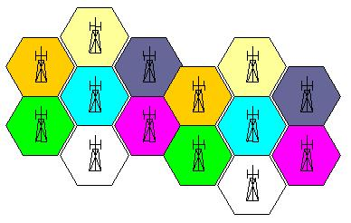

Torna alla pagina di Protocolli avanzati di rete
:: Protocolli avanzati di rete - Appunti del 3 Marzo ::
Telefonia analogica
La comunicazione analogica prevede che la voce, quindi una grandezza fisica, venga trasdotta in un'altra più adatta alla trasmissione a distanza, ad esempio in una tensione elettrica. Obiettivo della trasduzione sarà ottenere una forma d'onda che mantenga le caratteristiche del segnale vocale, cercando di deformandolo il meno possibile. Ai suoi tempi il buon Meucci riuscì a realizzare questo fenomeno convertendo la forma d'onda della pressione sui granuli di carbone (presenti nel microfono) in un'altra analoga ma sottoforma di tensione. Notare che il segnale trasdotto può essere trasmesso così com'è oppure può essere usato per modulare una portante.
La telefonia analogica rimane fino agli anni '70, oggi è stato digitalizzato tutto tranne il tratto dal telefono alla centralina. Perché non convertire anche questo allora? Perché la maggior parte dei telefoni delle nostre case sono ancora analogici, quindi è più conveniente effettuare la digitalizzazione nelle centraline e lasciare tutto il resto così com'è.
Il principale problema della telefonia è stato trovare una soluzione per il collegamento degli utenti, e in particolare come fare in modo che su uno stesso mezzo di comunicazione (il cavo telefonico) possano coesistere più chiamate tra abbonati diversi. Una prima soluzione è stata la commutazione di circuito (circuit switching), che prevede la creazione di un percorso fisico temporaneo tra mittente e ricevente; è il tipico caso delle centraliniste dei film dell'antiguerra che collegando opportunamente degli spinotti riescono a mettere in comunicazione due persone. La seconda soluzione è l'FDM, ovvero la Frequency Division Multiplexing che permette la comunicazione per portanti differenti. Ad essa è associato il concetto di forchetta telefonica, ovvero le tre portanti utilizzate in multiplexing per ogni comunicazione telefonica: una per l'invio, una per la ricezione ed una per il signaling, ovvero quell'insieme di operazioni orientate alla gestione della comunicazione stessa (ad esempio il segnale di hang up che indica il termine della telefonata)
Telefonia digitale
Nella telefonia digitale la forma d'onda del segnale vocale viene campionata in un flusso di numeri binari grazie ad un convertitore analogico-digitale ad 8 bit. In generale la frequenza di campionamento dipende da quanto cambia il segnale nel tempo, ma grazie al teorema di Nyquist sappiamo che deve essere almeno il doppio della frequenza della componente armonica più alta del segnale. Dopo una serie di prove di laboratorio si è scelto di utilizzare una frequenza di campionamento di 8KHz per la voce umana; in realtà era sufficiente la metà per la comprensione, ma meglio abbondare.
Il campionamento prevede la definizione di alcuni canali di quantizzazione, ovvere un intervallo di valori analogici a cui è associato un numero digitale di 8 bit. E' facile immaginare cosa sia il rumore di quantizzazione, ovvero quel fenomeno per il quale in seguito al campionamento non riesco più a distinguere due o più punti distinti del segnale che però appartengono allo stesso canale. Si tratta quindi di un errore, e il suo valore medio si calcola come Δ/2 , dove Δ è l'ampiezza della banda.
Quale sarà il bitrate (bit per secondo) di un canale audio? Facile: 8 bit * 8KHz = 64 Kbps.
Ovviamente in tutto questo discorso ci stiamo riferendo allo spettro confinato del segnale, ovvero lo spettro reale tagliato almeno del 90%. Sarebbe infatti impensabile utilizzarlo per intero dato che per definizione è infinito.
PSTN
La PSTN (Public Service Telephone Network) è la rete telefonica pubblica ed è formata da:
- apparati terminali analogici (telefoni), che effettuano la trasduzione e la modulazione del sognale vocale. Ognuno di essi ha una sua forchetta telefonica, e nulla vieta che possa averla uguale a quella di un altro telefono
- collegamenti terminali-centrali chiamati local loop, ovvero la linea che va da casa mia alla centralina
- collegamenti condivisi centrale-centrale chiamati trunk. Oggi sono realizzati in digitale, ma quando una volta c'era solo l'analogico erano implementati grazie all'FDM
- apparecchiature di commutazione, come ad esempio gli switch. Sono i dispositivi che rendono possibile la realizzazione di livelli gerarchici (ad esempio città->provincia->regione->nazioni), fondamentali per evitare il collasso della rete su larga scala. Le gerarchie non hanno standard, ma dipendono dalle caratteristiche della rete; ad esempio in una realtà molto piccola non ha senso avere più di un livello
- rete di controllo
Tutti questi elementi funzionano insieme per consentire a ogni abbonato di chiamare chiunque. Supponiamo che Piero abbia bisogno di parlare con sua moglie che ora si trova in ufficio circa i suoi problemi di incontinenza. Compone il numero 0373 123455.
Sulla singaling parte un pacchetto diretto alla centrale più vicina e che contiene il numero da chiamare. La centralina guarda il prefisso per capire di che zona si tratta e passa il pacchetto alla centrale competente (nel nostro caso quella cremasca). Questa centrale guarda le prime due cifre del numero per capire di quale paese si tratta (ad esempio a crema cominciano tutti con 12 o 13) e invia il pacchetto alla centrale responsabile. Quest'ultima localizza l'abbonato grazie alle cifre rimanenti e costruisce la comunicazione con un'operazione di buildering trasmessa sempre sulla sinaling. La comunicazione ha così finalmente inizio e vengono conteggiati gli scatti per calcolare il costo della telefonata. Intuitivamente, più l'abbonato da chiamare è lontano e più centraline troveremo nel percorso.
In generale la situazione è questa:
Dove:
- E è l'end office, la centralina connessa al telefono tramite il local loop. Tutto ciò che conoscono è l'indirizzo della centrale di switching più vicina, alla quale sono collegate mediante trunk. Notare che per legge ogni compagnia telefonica ha diritto di installare i propri switch nelle centraline di zona, così da garantire un minimo di concorrenza contro il colosso Telecom
- T è il toll office che tra le altre cose tengono traccia della durata della conversazione (
metering) così da poter compilare i tabulati telefonici dell'utenza ed effettuare il calcolo della bolletta. Quest'ultima operazione non è così semplice e lineare, dato che dipende da moltissimi fattori
- I è l'intermediate switching office, collegato ai toll per mezzo di cavi ad altissima banda. Questo switch guarda solo i prefissi per poter instradare la chiamata alla centrale di zona
- gli end e i toll office a destra della I guardano varie porzioni del numero rimanente per localizzare l'utente e fargli ricevere la telefonata
Abbiamo già detto che il segnale di signaling è quello che si occupa della gestione della comunicazione telefonica. L'SS7 (Signaling System 7) è uno standard internazionale ed è un protocollo di signaling che viaggia sul livello 2; a onor di cronaca, quello che gira sulla rete IP si chiama SIP. L'SS7 prevede una segnalazione out-band, cioè al di sopra della normale rete telefonica, mentre nelle vecchie comunicazioni per pacchetti il signaling viaggiava in-band, ad esempio negli header. Inutile dire che mantenerli separati aumenta la sicurezza.
Nella PSTN si farà quindi circuit-switching e le intere informazioni di signaling saranno raccolte e inviate all'inizio; bisognerà dunque aspettare un tempo di latenza (dovuto proprio al circuit setup) e poi più niente per tutta la comunicazione. Se invece ci troviamo ad utilizzare un protocollo di frame-switching (come Ethernet) avremmo avuto l'invio di informazioni di switching e signaling ad ogni frame.
Concludiamo segnalando il PBX (Private Branch Exchange), uno switch privato che consente l'accesso indiretto anche alla rete PSTN (ad esempio premendo il pulsante 0). Possono essere sia reali che virtuali, anche se questi ultimi rappresentano la maggior parte dei casi.
Rete mobile
Da un punto di vista infrastrutturale la rete mobile era stata studiata già dagli anni '50, non è poi così recente. Inoltre è evidente dall'età che il suo sviluppo è del tutto indipendente da quello di internet e dell'informatica.
L'antenato del cellulare nasce nel 1946 nei Laboratori Bell ed era ovviamente analogico. Poi nel 1968 gli stessi laboratori propongono il loro concetto di telefonia cellulare, riassumibile con questo schema psichedelico (dagli appunti del prof Damiani):

Abbiamo tante celle esagonali, ognuna delle quali è gestita da un'antenna con un proprio "pettine" di portanti traslato in frequenza rispetto alle celle adiacenti, così che non possano esistere sovrapposizioni di comunicazioni. Per il teorema dei quattro colori (vedi wikipedia) è dimostrabile che bastano un numero finito di portanti per non avere sovrapposizioni.
Prima nota di folklore: si chiama pettine perché è questo l'aspetto che assumono gli spettri dei segnali.
Quando un cellulare sta per effettuare una chiamata si connette all'antenna più vicina, che ha una portante di servizio per il signaling che mi assegna una seconda portante da usare per la comunicazione. Abbiamo quindi una FDM iniziale, ma con le portanti assegnate dinamicamente.
Seconda nota di folklore: le forma delle celle dipende dalla geometria dell'antenna, che di fatto influenza le superfici equipotenziali (quelle cioè che ricevono allo stesso potenziale); se ad esempio l'antenna è puntiforme la cella sarà sferica.
Ma cosa succede se mentre sto parlando mi muovo da una cella all'altra? Evidentemente cambia l'antenna che mi sta servendo, e quella nuova mi butterà giù la vecchia chiamata e provvederà a crearne un'altra assegnandomi una nuova portante a lei compatibile. Questo fenomeno è chiamato handover e dovrebbe essere gestito in modo trasparente all'utente, così che non si renda conto del passaggio. La gestione diventa più critica quando invece della telefonia consideriamo la comunicazione dati via telefoni mobili, perché questi ritardi (inferiori al secondo) influenzano il round-trip-time dei pacchetti del protocollo TCP, con gli smarrimenti e mancate sincronizzazioni conseguenti. Si noti infine che col protocollo di telefonia mobile UMTS è possibile implementare il meccanismo del Soft Handover, che prevede la connessione contemporanea del mobile a più stazioni radio (maggior impiego di risorse, ma notevole guadagno in termini di qualità del servizio).
Per stabilire una comunicazione tra telefoni fissi e cellulari, questi ultimi devono poter collegarsi alla rete PSTN attraverso le stazioni MTSO (Mobile Telephone Switching Office), ovvero delle schede che si mettono in certe centraline della telefonia mobile e fissa e che consentono l'interfacciamento. Ecco spiegato perché chiamare un fisso da cellulare costa più che chiamarne un altro: bisogna pagare anche il transito sulla rete fissa al gestore/proprietario della stessa.
Torna alla pagina di Protocolli avanzati di rete